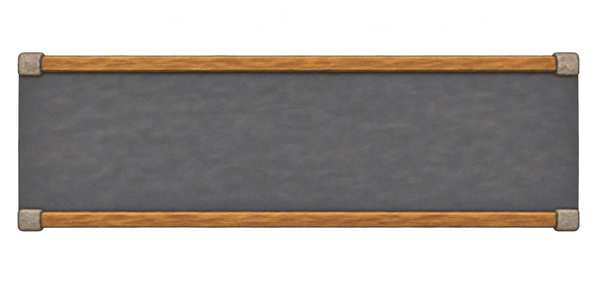
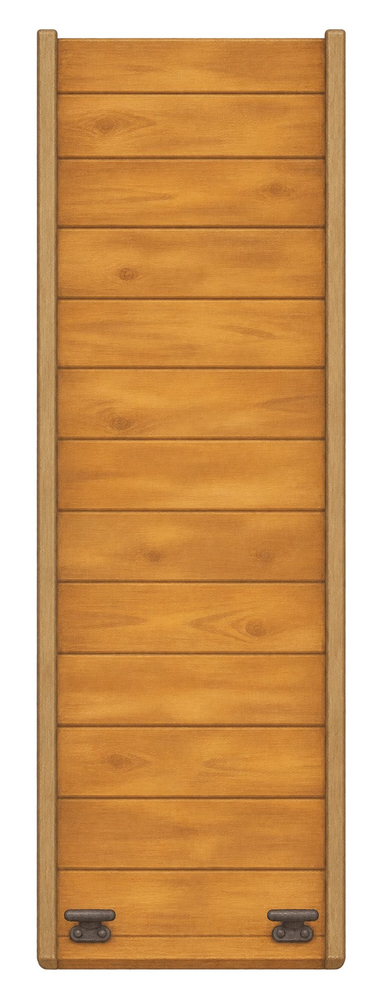
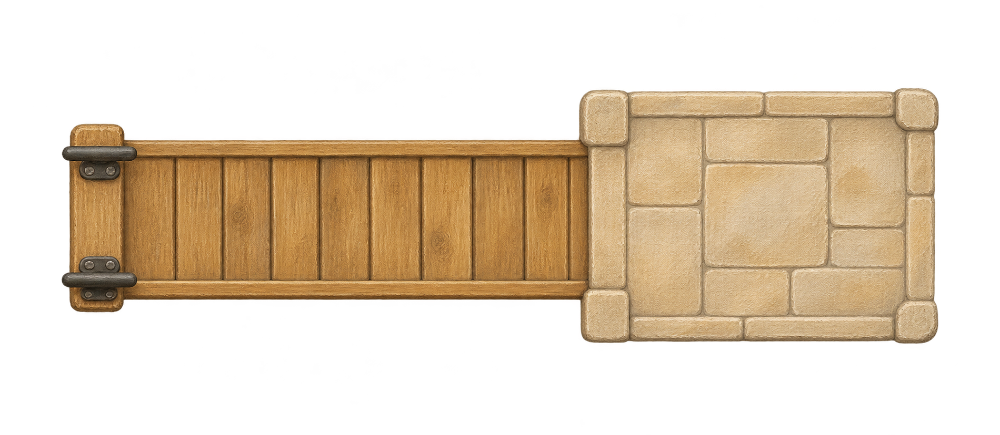
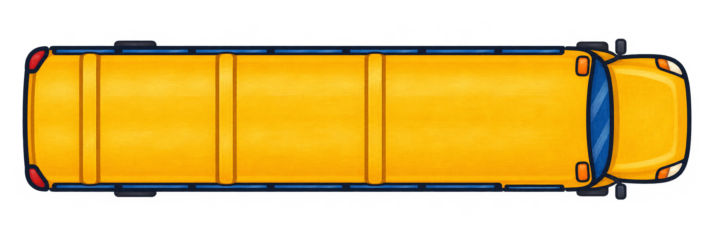
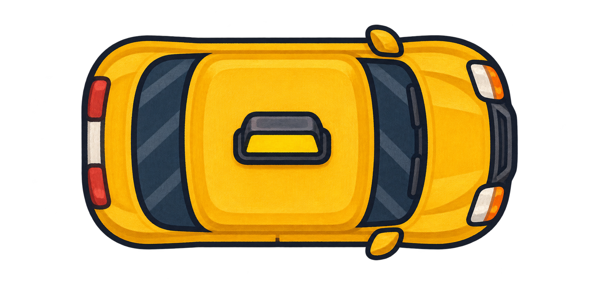
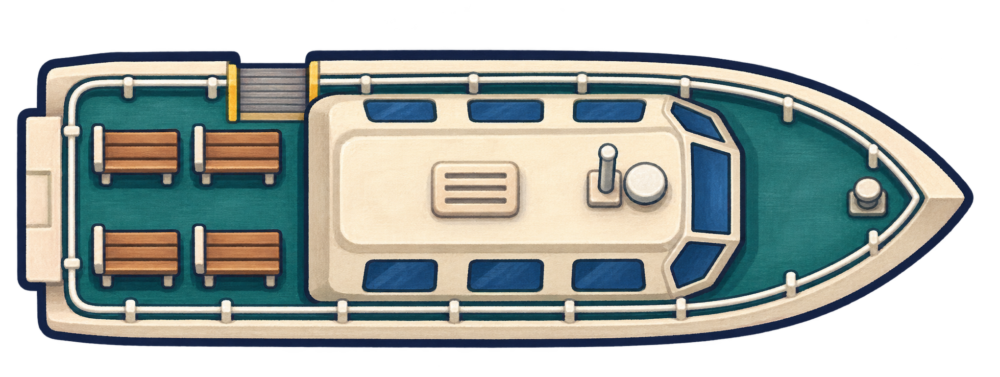

Miniature World · first scenery and sprite batch
Texture under live kerbs and lane marks

Open road connections at both ends

Shore at top · boarding at bottom

Water at left · shore pad at right

Long cabin · kerb-side boarding

Short body · distinctive roof sign

Teal deck · upper-side boarding gap